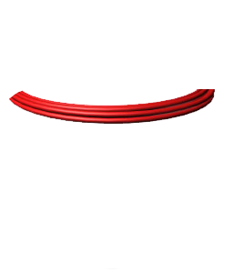

Faraday's Law: Applications
Another interesting application of Faraday’s law is the production of sound in an electric guitar. A vibrating string induces an emf in a coil. The pickup coil is placed near the vibrating guitar string, which is made of a metal that can be magnetized. The permanent magnet inside the coil magnetizes the portion of the string nearest the coil. When the guitar string vibrates at some frequency, its magnetized segment produces a changing magnetic flux through the pickup coil. The changing flux induces a voltage in the coil, which is fed to an amplifier. The output of the amplifier is sent to the loudspeakers, producing the sound waves that we hear.
How A Metal Detector Works
If a metallic conductor moves in a magnetic field (or a magnetic field moves, or changes, in the presence of a stationary metallic conducttor), small currents are generated in the conductor; the currents swirl around the inside. These currents are sometimes referred to as eddy currents. As all charges in motion do, eddy curennts generate a magnetic field.
The operation of metal detectors is based upon the principles of electromagnetic induction. Metal detectors contain one or more inductor coils that are used to interact with metallic elements on the ground. The single-coil detector illustrated below is a simplified version of one used in a real metal detector.
A pulsing current is applied to the coil, which then induces a magnetic field shown in blue. When the magnetic field of the coil moves across metal, such as the coin in this illustration, the field induces electric currents (called eddy currents) in the coin. The eddy currents induce their own magnetic field, shown in red, which generates an opposite current in the coil, which induces a signal indicating the presence of metal.